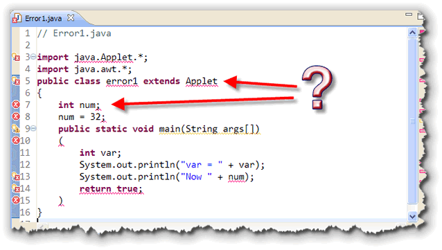
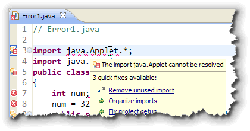
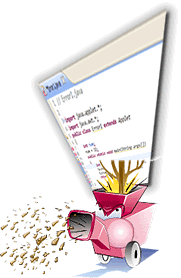
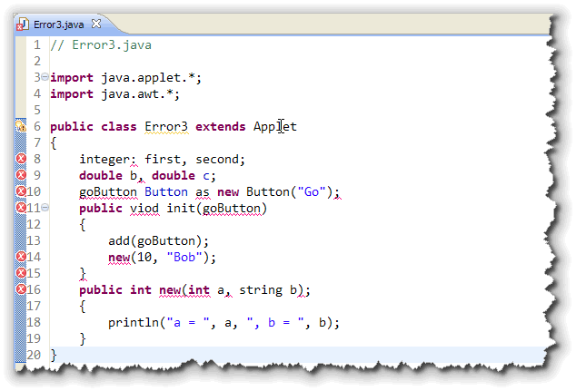
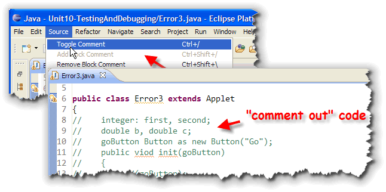
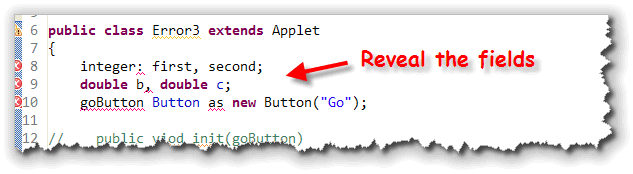

In one of my favorite allusions, Dr. Bill McCarty likens the Java compiler to a "...stern and pedantic taskmaster..." that "...tolerates absolutely no departure from the official rules of the Java language." I really like the image that this conveys. I also like to think of the Java compiler as a particularly tough Marine Drill Sergeant.
The reason that I like both these images is that they both hint at the reason why the compiler is so strict. It is good to learn to speak and think and write well while you are young and in school; doing so opens up opportunities that aren't available otherwise. It is much less costly for a soldier to learn on the training ground than to learn in the heat of battle.
In this lesson, you'll learn to recognize different kinds of errors in your programs.
- The Java compiler always tells you when you've made a mistake using Java's grammar, even if you don't understand its error messages. The errors that the compiler catches are called syntax errors.
- The Java Virtual Machine can recognize even more errors; those that leave the compiler blissfully unaware. When it encounters these runtime errors, it stops running your program and prints an error message.
- Even the JVM doesn't recognize every semantic or logical error. (A semantic error means that the your program is grammatically correct, but doesn't actually do what you thought; it is an error in meaning, not form.) Some semantic errors show up as an obvious malfunction, while others require careful testing to coax them out of hiding.
Let's start by looking at compile-time or syntax errors, and learn some strategies for dealing with them.
Syntax Errors
You want your compiler to be as picky as possible because errors that are discovered when you are developing your program are much easier (and less expensive) to fix, than errors that are discovered when your program has been shipped to customers all over the world.
Let me give you an example. The Visual Basic language,
which is also used as the programming language in Microsoft's
Office products, allows progammers
to create variables by simply using them. This is called
implicit declaration:
 If you use implicit declaration,
your Visual Basic compiler will not generate a syntax error when it
encounters a new variable it hasn't seen before. Your compiler
is much friendlier.
If you use implicit declaration,
your Visual Basic compiler will not generate a syntax error when it
encounters a new variable it hasn't seen before. Your compiler
is much friendlier.
 This sounds great, but professional programmers almost always
turn this feature off, if possible. Why? Because allowing
implicitly declared variables in your program also allows
misspelled variable names to slip through, and those errors
don't show up until your program runs.
This sounds great, but professional programmers almost always
turn this feature off, if possible. Why? Because allowing
implicitly declared variables in your program also allows
misspelled variable names to slip through, and those errors
don't show up until your program runs.
Professional programmers quickly learn that it is better to
catch every possible error in your program before you
ship it off into battle, even if that requires a compiler that
seems, well, a little "pedantic":

Here's a second example. Adobe's Flash uses a language called ActionScript that is based on JavaScript. The earlier versions of Flash used implicit typing, just like JavaScript. The latest version of ActionScript (AS3), however, should look familiar to those of you who've learned Java. That's right, when you declare a variable, you need to explicitly give it a type.
In this part of the lesson we're going to look at the kind of errors that the Java compiler is able to find. Such errors are called compile-time or, more generally, syntax errors. Such errors violate the very strict rules governing Java's formal grammar.
Not all errors in your program can be found by the compiler. The most difficult and intractable problems are not errors in expression, but errors in logic. We'll cover those kinds of errors in the second half of this lesson.
Error Messages
The following program contains several syntax errors. Before you go any further, why don't you just walk through the listing and see how many errors you can identify?
// Error1.java
import java.Applet.*;
import java.awt.*;
public class error1 extends Applet
{
int num;
num = 32;
public static void main(String args[])
(
int var;
System.out.println("var = " + var);
System.out.println("Now " + num);
return true;
)
}
The javac Compiler
When you compile this program with javac, the Java compiler that comes with Sun's Java Development kit, you get the seven error messages listed here.
>javac Error1.java
Error1.java:8: <identifier> expected
num = 32;
^
Error1.java:9: ';' expected
public static void main(String args[])
^
Error1.java:5: class error1 is public,
should be declared in a file named error1.java
public class error1 extends Applet
^
Error1.java:3: package java.Applet does not exist
import java.Applet.*;
^
Error1.java:5: cannot resolve symbol
symbol : class Applet
location: class error1
public class error1 extends Applet
^
Error1.java:8: cannot resolve symbol
symbol : class num
location: class error1
num = 32;
^
Error1.java:9: missing method body, or declare abstract
public static void main(String args[])
^
7 errors
This doesn't mean that the program
necessarily has exactly seven syntax errors,
however. Often, a single error can cause "cascading errors"
when one error leads to more errors, as subsequent lines are
misinterpreted.
Let's drop the program into Eclipse, and see how that works:

Notice the error that occurs on lines 3, 5, and 7. Because the name of the java.applet package was
accidentally capitalized, the compiler is unable to find the
Applet class. Thus, you get two error messages:
the first message on line 3, pointing out the the package
cannot be found:

Not All Error Messages Are Correct!
In the same way that one error can "cascade" and produce other errors, one error can also hide legitimate errors. You may think that your program only has a few errors, but when you fix one of them, all of a sudden, a dozen more appear. That's because with some mistake, the compiler can't understand enough of your code to discover the mistaken statements.
So, as you can see, you can't simply rely on the compiler telling you exactly what's wrong with your code. Instead, you need to follow a systematic strategy that will help you track down, understand and then squash your syntax errors.
Common Errors
Although there are a wide variety of error messages, compile-time errors really come in four basic categories:
- Structural errors
- "Real" syntax errors
- Typographical errors
- Type errors
Understanding these basic categories, and the different ways to correct and avoid them, will go a long way toward helping you write code that compiles cleanly the first time. Of course, once you've done that, the real error correction is just getting started.
Let's take a look at these four categories.
Structural Errors

Sometimes, we think of the Java compiler as a machine that takes source code in one end and spits compiled bytecode out the other. The problem with this analogy is that it leads us to think of the compiler like a log chipper processing our source code in a purely sequential manner. In fact, that's not what happens at all.Before the Java compiler can even think about turning your source code into byte-code, it first must read your entire program, and then organize it. This organization phase is called parsing or tokenizing your program.
When the compiler parses your code, it breaks the entire program up into individual pieces called tokens. This tokenizing phase is almost exclusively dependent upon the precise matching of pairs of delimiters: single quotes, double quotes, parentheses, and braces.
Error2.java
For instance, look at this program, which has more syntax errors than Error1.java. See how many errors you can list before you read further.
// Error2.java [Structural Errors]
import java.applet.*;
import java.awt.*;
public class Error2 extends Applet
(
ink num;
num = 32;
Public Static void main(String args[])
(
integer var;
System->out.println("var = + var);
System->out.println("Now ' + num);
return TRUE;
)
)
Error2 Errors
Here are the errors you should be able to identify:
inkandintegerare used as primitive types, instead ofint- The C++ pointer-to-member operator is used, despite the fact that Java does not have a similar operator.
- The keywords
publicandstaticare both misspelled. - A
voidfunction returns something calledTRUE. - An assignment is performed outside of a method.
- Parentheses are used as delimiters around both the class and method definitions.
Stringconstants are not correctly delimited.
What javac Reports
Despite all of these problems, when you compile this program, with the javac compiler, this is what you'll see:
C:\> javac Error2.java
Error2.java:5: '{' expected
public class Error2 extends Applet
^
Error2.java:12: unclosed string literal
System->out.println("var = + var);
^
Error2.java:13: unclosed string literal
System->out.println("Now ' + num);
^
Error2.java:16: '}' expected
)
^
4 errors
The result? Three fewer errors than displayed for Error1.java.
What Does This Mean?
During the parsing phase, the compiler attempts to organize the
program by matching keywords such as class, along
with delimiters. When you fail to get the essential
organization of your program correct, then the compiler
really can't go any further.
This program doesn't really have only four errors; the remaining errors are hidden by the structural errors. Only after the entire program is organized correctly, can the compiler go through and make sure the right tokens are in the correct order.
How Do You Fix It?
Preventing structural errors is really much easier than correcting them afterwards. Here are three things you can do to prevent them from occurring in the first place:
- Understand what goes where.
Don't just copy code and place code fragments at random in your Java programs. Know where each element belongs. Specifically, make sure you understand that: importandpackagestatements must appear at the beginning of your file.- Field definitions must appear inside a class defintion, but outside of any method definition.
- Method definitions must be inside a class defintion, but not inside any other method definition.
- Program statements, except for field definitions, must appear inside methods. Program statements must end with semicolons.
- Formal parameter varaibles go inside the parentheses following a method name, and must include both a type and a name for each parameter variable.
- Write structural elements in one piece.
Beginning programmers often start at the beginning of a structural element—a class or method definition, or a selection or iteration statement—and work through to the bottom. Experienced programmers will put the structure in place first—write the header and add the opening and closing braces—before turning to the body of the class or method.Of course, if you use the Eclipse IDE, the Eclipse Java Editor will do this for you automatically.
- Indent correctly.
Use a consistent and easily checked indenting style. Your indenting style should allow you to easily tell, at a glance, if all your braces are in the right place. Failing to indent and line up your braces makes your code almost impossible to check.In the Eclipse IDE, if your code gets "messed up", you can reformat the entire file by choosing Format from the Source menu. This only works, though, if you've fixed the overall structural problems first.
"Real" Syntax Errors
After the Java compiler has tokenized your code, a second phase of parsing takes place. This is lexical analysis—making sure that the correct kinds of elements (tokens) are in the correct places. Errors in the lexical analysis phase are "really" syntax errors.
Using two keywords in a row, for instance, results in a syntax error like this:
int double a;
Using a keyword when it is not necessary results in a syntax error. This is a common example:
int a = 10, int b = 20;
Omitting a required token results in a similar syntax error, like this:
public void myMethod(int a, b){ }
Using a token in an incorrect context (such as the keyword
void) can also result in a syntax error like this:
public void class MyApplet extends Applet
There is no "magic bullet" for detecting and preventing this kind of syntax error. You simply have to learn to put the right keywords and tokens in the correct order.
Typographical Errors
Typographical errors are somewhat easier to deal with than structural errors because the Java compiler usually pinpoints them fairly accurately.
Here are the three most common typographical errors you're likely to make:
- Missing semicolon.
Let's face it, semicolons are small, and hard to see. Even worse, the colon, which looks almost exactly like a semicolon, is on the same key and is the character you're likely to insert when you mistype. - Using assignment [=] instead of equality [==].
Fortunately, Java, unlike C, will usually catch this error. (It won't catch it if the variable you are trying to compare is aboolean.) Still, it's annoying to have to go back and fix it. - Using the wrong case.
Java is a case sensitive language, and that case sensitivity extends to Java filenames, even on operating systems that are not, themselves case sensitive, like Windows and the Mac.
Type Errors
Remember that a variable is a "bucket" where you store values.
When you ask the compiler to create a variable for you, you tell
it what kind of values you intend to store in your bucket.
This allows Java to prevent you from storing milk or soda in a
cardboard box designed to hold dry cereal, so to speak.
Java's type system is designed to keep you from losing information,
not to make life difficult for you. Understanding these three
simple rules should help you to go along with the program:
- You can store a little value in a big bucket, but not
vice-versa. This means you can store
byte,short,int, andlongvalues in alongvariable, but you cannot store alongvalue in abyte,short, orintvariable. - You can store a less-precise value in a
more-precise bucket, but not vice-versa. This means
you can store
byte,short,int,long, andfloatvalues in adoublevariable, but cannot storedoublevalues in abyte,short,int,long, orfloatvariable; the "bucket" is incapable of retaining the necessary precision. - You can only store similar things in similar buckets. You
can store different numeric values in different kinds of
numeric variables, but you cannot store
booleanvalues or object references in numeric variables.
Finding the Errors
If your program has only a single compile-time error, and, if the error is straightforward, finding and fixing it is usually no problem. What do you do, though, when you get 25 errors, or when the error message produced by Java's compiler doesn't seem to make any sense at all.
When this occurs, you really need to have a systematic strategy for finding and fixing the errors, instead of simply starting at the beginning. Systematically attacking the problem will help you avoid frustration and will help you eliminate syntax errors in record time. This is called the "divide and conquer" approach.
Let's work through and example to see how this works using the Eclipse IDE. The following applet generates five errors, but the strategy we'll follow will help you regardless of the number of errors:
// Error3.java
import java.applet.*;
import java.awt.*;
public class Error3 extends Applet
{
integer: first, second;
double b, double c;
goButton Button as new Button("Go");
public viod init(goButton)
{
add(goButton);
new(10, "Bob");
}
public int new(int a, string b);
{
println("a = ", a, ", b = ", b);
}
}
If you enter (or copy) this code into Eclipse, this is what
you see:

Step 1: Structure First
Begin by "commenting out" the entire body of your applet's class.
The easiest way to do that in Eclipse is to select the lines
you want to comment or uncomment, and choose Toggle Comments
from the Source menu like this:

You can also do that by using the multi-line comment symbols (/*, */) like this:
// Error3 - Step 1
import java.applet.*;
import java.awt.*;
public class Error3 extends Applet
{
/*
integer: first, second;
double b, double c;
goButton Button as new Button("Go");
public viod init(goButton)
{
add(goButton);
new(10, "Bob");
}
public int new(int a, string b);
{
println("a = ", a, ", b = ", b);
}
*/
}
Now when you compile your program you won't see any errors at all. If any errors did appear, you'd know that you had:
- made an error in the basic structure of your class, or...
- made an error in one of your import statements, or...
- made an error in the class header.
By commenting out the body of your class, you've narrowed the number of places where you have to go looking for errors.
Step 2: Reveal the Fields
Once the basic structure of your applet compiles cleanly, toggle the comments that are hiding your instance variables or fields. When you do this, you'll see the following errors displayed:

Now you have isolated the errors those that have to do with defining fields or instance variables. That means, once again, you have fewer things to think about. Instead of trying to remember the syntax for a method, you only need to remember how to define an instance variable. For this example, you'd make the following changes:
 The corrected code changes from the Pascal syntax originally
used for the two integer variables, removes the extra
The corrected code changes from the Pascal syntax originally
used for the two integer variables, removes the extra
double keyword inserted in the second declaration,
and makes sure that we use Java instead of Visual Basic to
define the applet's button.
Step 3: Method by Method
Continue this divide and conquer approach by "uncommenting" to reveal the first method. Recompile and fix the errors you find. Continue to reveal the rest of the class, method by method, until the entire program compiles without error.
Coming Up ...
In this lesson, you learned how to recognize different kinds of syntax errors and also learned a step-by-step strategy for dealing with code that doesn't compile.
Now that you know about the different compile-time errors, its time to turn your attention to the more difficult topic of runtime errors.
Like compile-time errors, runtime errors come in several varieties; in the next lesson, you'll learn to recognize the different kinds of runtime errors, and develop a strategy for fixing, and/or, avoiding them. You'll also learn how to use assertions and exceptions to make sure that your classes are not misused.